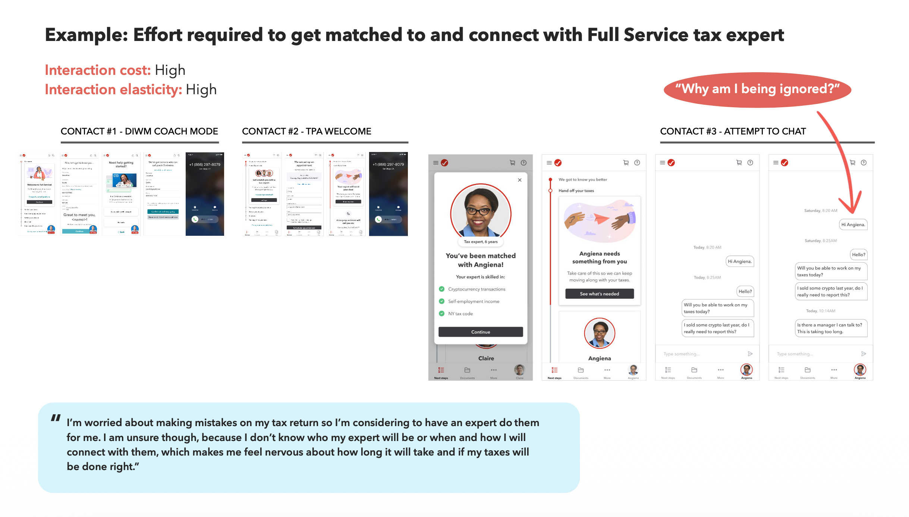
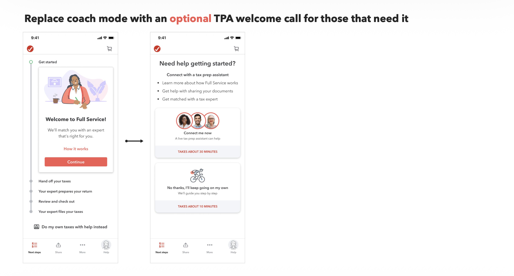

Field notes
A framework survives past its original project only if it's tied to something the business already feels as a cost.
In 2022 I was working on TurboTax Full Service, and customers weren't leaving because the tax prep was wrong. They were leaving because they didn't know what was happening to their return while they waited for it. Our research lead, Joanna Vodopivec, had done the work to define who these customers actually were, not static personas, but mindsets: a spectrum from Passenger (I don't want to do this) to Pilot (I've got this), organized by how much control and understanding someone needed, not by demographic or filing complexity.
I made the case for designing around that spectrum instead of a fixed persona, because mindsets shift. Someone who was a Passenger their first year, handing everything to an expert because they didn't trust themselves to do it right, could become a Pilot two years later, confident enough to file on their own. A persona locks a person in place. A mindset describes where they are right now, and where they might move next.
But a spectrum of mindsets doesn't tell you what to build. It tells you who you're building for. What was mine to figure out was what was actually costing us their trust while they sat in that spectrum, waiting.
I brought in Nielsen Norman Group's interaction cost model: the sum of mental and physical effort a person has to spend to reach their goal. Every product has some interaction cost. The question is whether that cost is doing something useful, or just accumulating as friction nobody's accounting for.
Our support data had a number sitting in it that nobody had connected to anything: not knowing where their return stood in the process was the single biggest reason customers contacted support in Tax Year 2021, ahead of any tax question itself. Of the customers who called in confused about status, seventeen percent asked to leave Full Service entirely on that same call. Sixty-three percent of those requests traced back to one thing: a status they'd never been given.

On its own, that's a support metric. Once I ran it through the interaction cost lens, it became something else: every hour a customer spent not knowing what was happening to their return was interaction cost with zero benefit attached. They weren't getting anything for that wait. It was pure tax on their trust in the product.
That reframe is what turned a pain point into a design brief. The question stopped being how do we make the wait shorter and became how do we keep customers informed about what's going on, which is a question you can actually design against. The answer was a set of vignettes mapping exactly where in the journey a customer was left waiting with no signal, and what would replace that silence: sync options for people who wanted resolution now, async checkpoints for people who didn't, status visibility everywhere a person had previously been asked to just trust that something was happening.

None of this was novel UX theory. Interaction cost is a known concept. What made it hold up was that it wasn't left as theory. It got tied to a number the business already tracked, and once a framework is load-bearing for a metric someone already reports on, it's much harder for it to quietly disappear when the project ends.
It didn't disappear. Years later, on Activate Experts, TurboTax's top-of-funnel acquisition program, evaluating a different part of the customer journey, that same mindset structure resurfaced inside a custom Gemini tool I built to help reason through design rationale and test interpretation, one of the reference frameworks it was grounded in from the start. Nobody had to reintroduce the concept. It had already become part of how I thought about customers.
I don't think that happened because the framework was clever. I think it happened because it was never just a framework. It was a framework wired to a cost someone already felt.
Matt Kirkpatrick is a Principal Product Designer at Intuit.